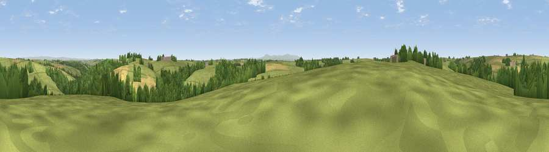

Viewpoint near Riddlecombe
#26857 in England · top 50% of its area beats it · near RiddlecombeThe view, rendered

A 360° render of this exact spot computed from the terrain model, tree cover and land cover — summer colours, afternoon light, calibrated against photographs of famous viewpoints. Real trees, hedges and buildings will differ in detail.
The panorama
Grey silhouette: terrain skyline in each direction (720 bearings, Earth curvature and refraction included). Dashed green: skyline with trees (+15 m) and buildings (+8 m) as obstacles. Blue strip: how far the ground is visible on each bearing.
Where the view opens
Wedge length = distance to the farthest visible ground on that bearing (vegetation-aware). Rings at 10, 25 and 50 km.
What fills the view
56% grassland · 27% woodland · 16% cropland
Angular shares of the visible panorama (visual magnitude), not map area. Landscape diversity 0.43 (0–1 Shannon).
Key numbers
More beautiful places nearby
The staircase of upgrades: each row has a higher view potential than everything closer. Driving times are estimates from straight-line distance, calibrated against real road routing — check an actual route before setting out.
| Place | Direction | Drive | Score |
|---|---|---|---|
| Viewpoint near Ashreigney | E · 2 km | ~6 min | 53.8 |
| Viewpoint near Hollocombe | ESE · 4 km | ~9 min | 55.3 |
| Viewpoint near Burrington | NNE · 4 km | ~10 min | 58.1 |
| Viewpoint near Burrington | NE · 4 km | ~10 min | 60.5 |
| Viewpoint near Burrington | NNE · 5 km | ~10 min | 66.4 |
| Viewpoint near High Bullen | NW · 12 km | ~22 min | 71.2 |
| Viewpoint near Landkey | N · 16 km | ~28 min | 74.0 |
| Codden Hill | NNW · 16 km | ~28 min | 81.3 |
50.90907, -3.96884 · source: screening · position refined by local search. Computed location — check access rights before visiting.